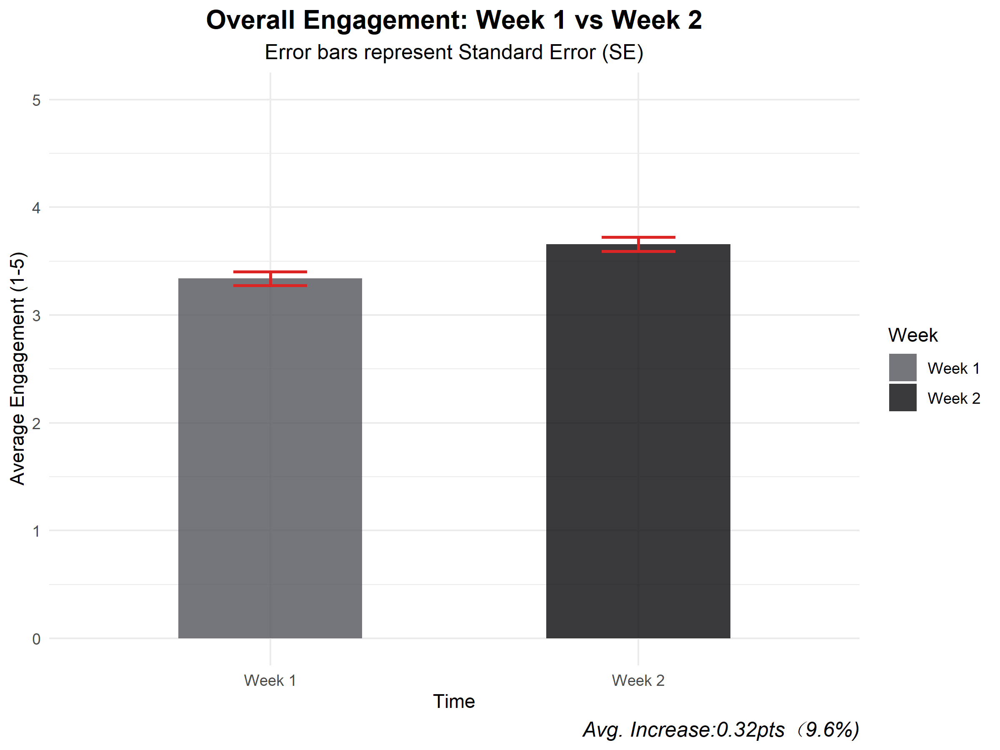
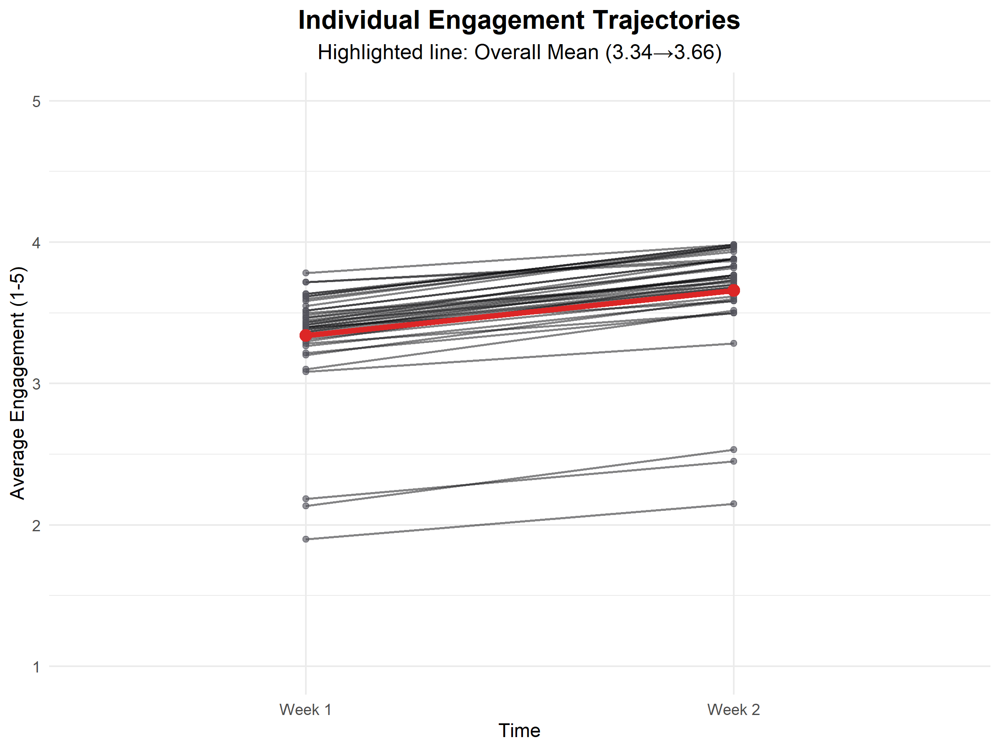
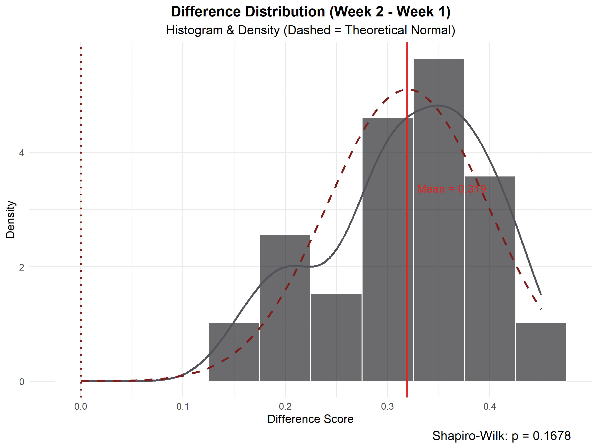
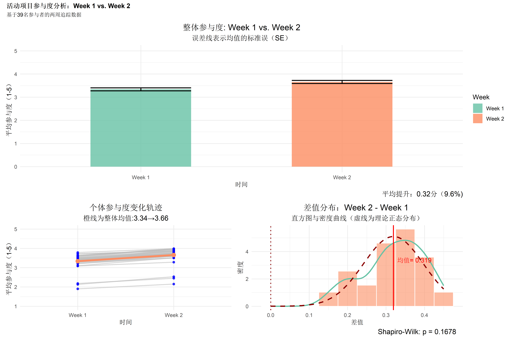

Data Disclaimer
This project is based on real-world scenarios. All data is simulated to demonstrate a complete quantitative analysis workflow—from data cleaning and statistical modeling to generating visual insights.
Case Study: Youth Camp Engagement Analysis
Project Background
This case simulates a two-week youth camp. 39 participants (ages 14-18, diverse demographics) rated their engagement (1-5 scale) across 6 core activities at the end of Week 1 and Week 2.
After Week 1, the team made micro-adjustments to activities based on initial feedback. This analysis focuses on the quantitative comparison between the two weeks to evaluate overall engagement trends, independent of specific causal factors.
Analysis Objectives
- — Overall Trend: Did engagement significantly improve in Week 2, and by what magnitude?
- — Individual Consistency: Was the improvement driven by a few outliers, or a widespread trend across most participants?
- — Statistical Reliability: Does the data meet the assumptions for a paired-samples t-test, ensuring robust conclusions?
Statistical Validation & Assumption Testing
Before proceeding with visual analysis, normality and significance tests were conducted to ensure all business conclusions are backed by solid statistical evidence.
Normality Test (Shapiro-Wilk)
A distribution test was conducted on individual difference scores to verify parametric testing assumptions.
Paired-Samples T-Test
Analyzed the overall mean difference between Week 1 and Week 2 to rule out random error.

FIG 01. Overall Engagement Comparison
Overall Engagement Comparison
Key Finding: Average engagement in Week 2 (M = 3.66, SD = 0.41) was significantly higher than Week 1 (M = 3.34, SD = 0.40), marking an average increase of 0.32 points (+9.6%).
Interpretation: Short error bars indicate low score fluctuation, demonstrating a stable upward trend across the group. This establishes a clear quantitative baseline for further analysis.
Individual Engagement Trajectories
Key Finding: Individual trajectories display a clear upward trend for nearly all 39 participants, alongside a very low standard deviation for difference scores (SD = 0.08).
Interpretation: The minimal variance indicates that the magnitude of improvement is highly concentrated around the mean. This cross-validates the group-level improvements.

FIG 02. Individual Engagement Trajectories

FIG 03. Difference Distribution & Significance
Difference Distribution & Validation
Key Finding: The mean difference across participants is 0.319 points. The difference histogram reveals a distribution highly concentrated to the right of the zero baseline.
Interpretation: This confirms the data meets the normal distribution assumption, validating the paired t-test results and proving the overall increase is statistically sound.
Analytical Narrative Dashboard
This dashboard integrates overall trends, individual trajectories, and statistical diagnostics into a unified view. These components mutually corroborate each other, thoroughly addressing the core research objectives.

Research Insights & Next Steps
This comparative analysis confirms a significant group-level improvement and high individual-level consistency. Based on these findings, we recommend the following next steps:
Qualitative Attribution
Conduct semi-structured interviews with the top and bottom 20% of participants (based on improvement) to uncover specific causal factors.
Quantitative Breakdown
Gather detailed ratings per activity to identify high- and low-contribution events, forming a comprehensive impact matrix.
Early Warning Mechanism
Develop an At-Risk Warning List using pulse surveys after Week 1 to proactively identify disengaged users and implement timely interventions.
{ }
Appendix: RStudio Code
Appendix: RStudio Code
// Environment Setup & Data Import
library(dplyr)
library(tidyr)
library(ggplot2)
library(readxl)
my_colors <- c("#475569","#0F172A") # Updated to monochrome
df <- read_excel("participant_full_data.xlsx")
df$Week <- factor(df$Week, level = c("Week 1", "Week 2"))// 00 Statistical Testing
# Convert to wide format to calculate differences
week_wide <- df %>%
group_by(Participant_ID, Week) %>%
summarise(Per_Average = mean(Engagement_Score), .groups = "drop") %>%
pivot_wider(names_from = Week, values_from = Per_Average) %>%
mutate(Difference = `Week 2` - `Week 1`)
# 1. Normality test of difference scores
shapiro_result <- shapiro.test(week_wide$Difference)
# 2. Paired-samples t-test
t_result <- t.test(week_wide$`Week 2`, week_wide$`Week 1`, paired = TRUE)// 01 Overall Engagement Comparison
👉 View Fig 01# Data cleaning: calculate individual averages and weekly summaries
individual_data <- df %>%
group_by(Participant_ID, Week) %>%
summarise(Per_Average = mean(Engagement_Score), .groups = "drop")
week_sum <- individual_data %>%
group_by(Week) %>%
summarise(
Average = mean(Per_Average),
SD = sd(Per_Average),
n = n(),
.groups = "drop"
) %>%
mutate(SE = SD / sqrt(n))
# Plotting
p_col <- ggplot(week_sum, aes(x = Week, y = Average, fill = Week)) +
geom_col(width = 0.5, alpha = 0.8) +
geom_errorbar(aes(ymin = Average - SE, ymax = Average + SE), width = 0.5, linewidth = 0.8) +
labs(title = "Overall Engagement: Week 1 vs Week 2",
x = "Time",
y = "Average Engagement (1-5)",
subtitle = "Error bars represent standard error (SE) of the mean",
caption = paste0("Average Increase: ",
round(week_sum$Average[2]-week_sum$Average[1],2),
" points (",round((week_sum$Average[2]-week_sum$Average[1])/
week_sum$Average[1]*100,1),"%)")) +
scale_fill_manual(values = my_colors) +
theme_minimal() +
theme(plot.title = element_text(size=14,hjust=0.5),
plot.subtitle = element_text(size=12,hjust = 0.5),
plot.caption=element_text(size=12,hjust = 1)) +
ylim(0, 5)// 02 Individual Trajectories
👉 View Fig 02# Plotting (based on individual_data)
p_individual <- ggplot(individual_data, aes(x = Week, y = Per_Average,
group = Participant_ID)) +
geom_line(alpha = 0.6, linewidth = 0.8, color = "grey") +
geom_point(alpha = 0.8, size = 1.5, color = "blue") +
stat_summary(aes(group = 1), fun = mean, geom = "line",
color = my_colors[2], linewidth = 1.5) +
stat_summary(aes(group = 1), fun = mean, geom = "point",
color = my_colors[2], size = 3) +
labs(title = "Individual Engagement Trajectories",
subtitle = paste0("Red line is overall mean: ",
round(week_sum$Average[1],2),"→",
round(week_sum$Average[2],2)),
x = "Time", y = "Average Engagement (1-5)") +
theme_minimal() +
theme(plot.title = element_text(size=14,hjust=0.5),
plot.subtitle = element_text(size=12,hjust = 0.5)) +
ylim(1, 5)// 03 Difference Distribution & Significance
👉 View Fig 03# Plotting (based on week_wide)
p_histogram <- ggplot(week_wide, aes(x = Difference)) +
geom_histogram(aes(y = after_stat(density)), bins = 10, fill = my_colors[2], alpha = 0.6,
color = "white") +
geom_density(color = my_colors[1], linewidth = 1) +
stat_function(fun = dnorm,
args = list(
mean = mean(week_wide$Difference),
sd = sd(week_wide$Difference)
), color = "darkred", linetype = "dashed", linewidth = 1) +
geom_vline(xintercept = 0, linetype = "dotted", color = "darkred", linewidth = 0.8) +
geom_vline(xintercept = mean(week_wide$Difference),
color = "red", linewidth = 0.8) +
annotate("text", x = mean(week_wide$Difference) + 0.01,
y = max(density(week_wide$Difference)$y) * 0.7,
label = paste0("Mean= ", round(mean(week_wide$Difference), 3)),
color = "red", hjust = 0, size = 3.8) +
labs(title = "Difference Distribution: Week 2 - Week 1",
subtitle = "Histogram & Density Curve (Dashed line is theoretical normal)",
x = "Difference", y = "Density",
caption = paste0("Shapiro-Wilk: p = ", round(shapiro_result$p.value, 4))) +
theme_minimal() +
theme(plot.title = element_text(size = 14, hjust = 0.5),
plot.subtitle = element_text(size = 12, hjust = 0.5),
plot.caption = element_text(size = 12, hjust = 0.95))